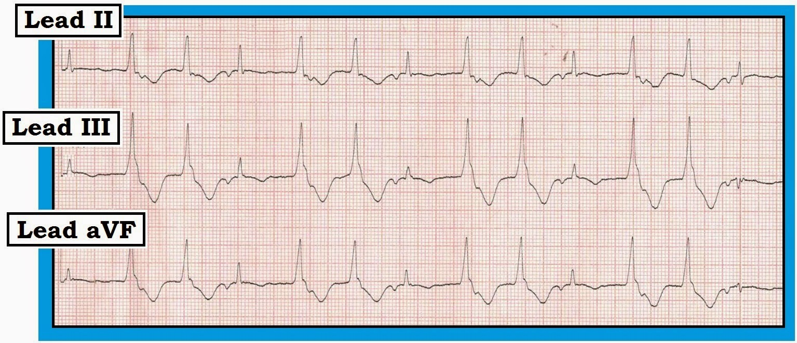
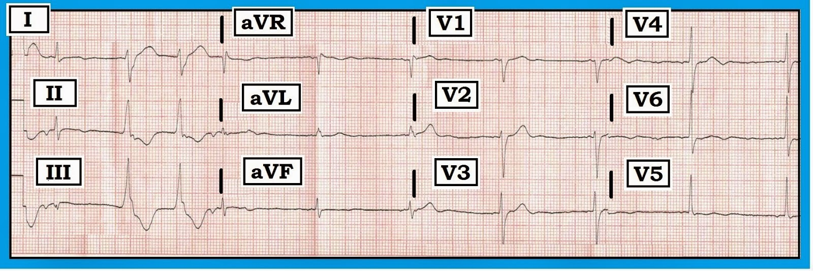
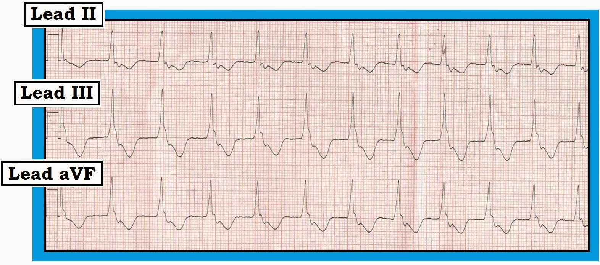
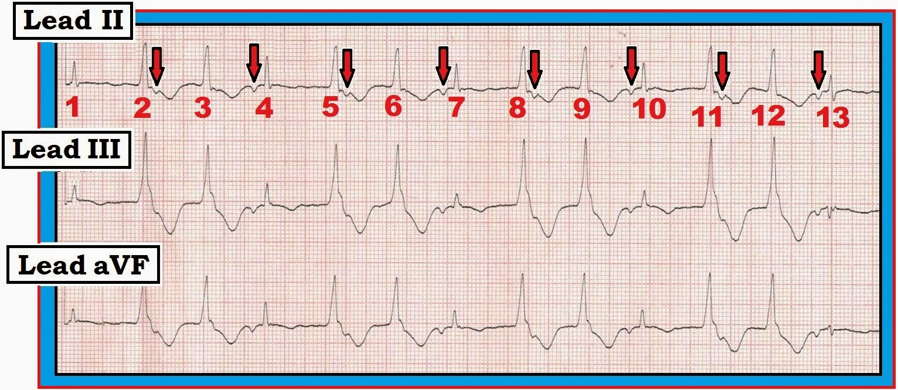
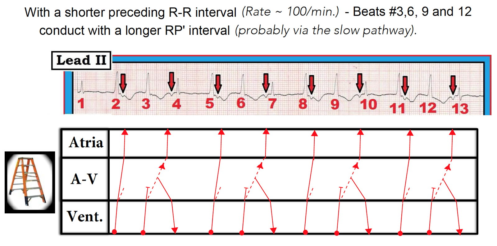
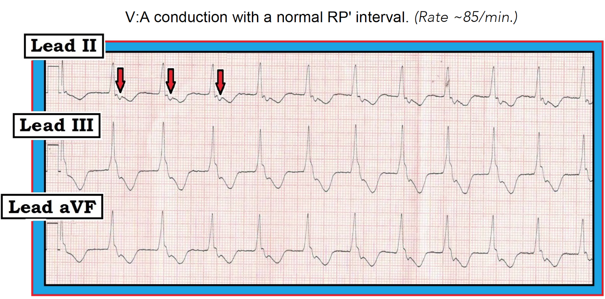
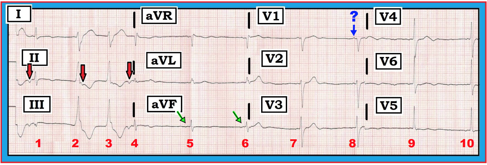

ECG Blog #107 — Nhát dội thất (ventricular echo)?
Các bản ghi trong Hình 1, Hình 2 và Hình 3 — được ghi liên tiếp trong thời gian ngắn ở một phụ nữ 69 tuổi có tiền sử hồi hộp từng đợt, thời gian ngắn trong vài năm qua. Hồi hộp tăng dần trong 2 tuần gần đây. Vào ngày nhập viện, bà xuất hiện cảm giác nặng ngực kèm "choáng váng". Nghe bệnh sử này và nhận thấy nhịp tim không đều — bác sĩ chăm sóc ban đầu đã chuyển bệnh nhân nhập viện.
- Tiền sử bệnh — khá lành tính. Không có tiền sử tim mạch đáng kể. KHÔNG dùng thuốc gì!
- LƯU Ý: Trong suốt quá trình vận chuyển tới bệnh viện, bệnh nhân không lúc nào mất ổn định. Dù vậy, HA của bà giảm từ 130/75 mmHg xuống 105 mmHg tâm thu vào thời điểm ghi dải nhịp ở Hình 3.
Bạn diễn giải loạt bản ghi này như thế nào?
- Có bằng chứng về hoạt động nhĩ không? Nếu có — Có hoạt động nhĩ bình thường nào không?
- Bạn có giải thích được lý do nhịp thay đổi ở Hình 1 so với nhịp ở Hình 3 không?
- Bạn có giải thích được vì sao HA của bà giảm vào thời điểm ghi nhịp ở Hình 3 không?
- Điện tâm đồ 12 chuyển đạo của bệnh nhân có giải thích được tiền sử hồi hộp lâu năm không?
- Về lâm sàng — Bạn sẽ xử trí tiếp thế nào? Có chỉ định điều trị ngay không?


============================


============================


Diễn giải CỦA TÔI và TRẢ LỜI cho case này:
- LƯU Ý: Các đồng nghiệp của tôi trong EKG Club vẫn đang tranh luận sôi nổi về cơ chế của rối loạn nhịp này. Như bác sĩ tim mạch đáng kính Rosenbaum từng nói, "Mọi rối loạn nhịp tự trọng đều có ít nhất 3 cách diễn giải khả dĩ". DƯỚI ĐÂY là "Quan điểm của tôi" về cơ chế và những điểm giảng dạy quan trọng nhất rút ra từ case thú vị này:
Câu trả lời "NGẮN": Chúng ta không thấy bằng chứng của nhịp xoang — vì không hề thấy sóng P dương dẫn truyền ở chuyển đạo II trên bất kỳ bản ghi nào trong 3 bản ghi này. Dù người ta giả định đây là nhịp nhĩ thấp lạc chỗ (sóng P âm dẫn truyền thỉnh thoảng thấy ở chuyển đạo II) — hay là một cơ chế phức tạp của dẫn truyền nhĩ ngược dòng từ các nhát thất, thỉnh thoảng quay lại bắt được thất (qua các nhát dội) — thì vẫn không có sóng P xoang bình thường dẫn truyền.
- Có nhiều nhát thất xảy ra với tần số tương đối chậm. Chúng xuất hiện thành cặp đôi ở Hình 4 (các nhát #2,3; 5,6; 8,9; và 11,12). Ở Hình 3 — chúng xảy ra thành một chuỗi AIVR (nhịp tự thất gia tốc — Accelerated IdioVentricular Rhythm), như chúng ta sẽ bàn kỹ hơn ở Hình 6.
- Vậy "Câu trả lời NGẮN" — là người phụ nữ 69 tuổi trước đây được cho là khỏe mạnh này đã có những chuỗi AIVR mà không rõ lý do. Với tiền sử hồi hộp trong nhiều năm — biết đâu bà đã có rối loạn nhịp này từng đợt suốt khoảng thời gian đó ...


Hoàn chỉnh câu trả lời "NGẮN": AIVR là một nhịp lạc chỗ thất "tăng cường", có tần số nhanh hơn tần số thoát thất nội tại (khoảng ~20-40/phút) — và chậm hơn nhịp nhanh thất (VT) gây rối loạn huyết động đáng kể (tức VT với tần số >130-140/phút).
- Do đó, tần số thường gặp của AIVR là trong khoảng ~60-110/phút (với một vùng "chồng lấp" giữa AIVR và VT nhanh ở ~120-130/phút).
- AIVR thường xảy ra trong một trong các bối cảnh lâm sàng sau: i) là một nhịp trong ngừng tim; ii) trong giai đoạn theo dõi nhồi máu cơ tim cấp (đặc biệt với nhồi máu cơ tim thành dưới); hoặc iii) là rối loạn nhịp do tái tưới máu (sau tiêu sợi huyết, nong mạch vành, hoặc tái tưới máu tự phát). Nó cũng có thể xảy ra ở bệnh nhân có bệnh mạch vành nền, bệnh cơ tim, hoặc ngộ độc digoxin.
- AIVR thường là một "nhịp thoát" — theo nghĩa nó xuất hiện vì cả nút xoang (SA) lẫn nút nhĩ thất (AV) đều không hoạt động. NẾU cần điều trị (vì mất "cú hích" nhĩ gây tụt huyết áp) — Atropine là thuốc được chọn (với hy vọng làm nút xoang nhanh lên để lấy lại chức năng tạo nhịp). Không được sốc điện AIVR, cũng không được điều trị bằng Amiodarone/Procainamide — vì làm vậy có thể gây vô tâm thu ...
- Chúng ta KHÔNG biết vì sao bệnh nhân trong case này có các chuỗi AIVR (có thể trong suốt nhiều năm ... ). Cần loại trừ thiếu máu cục bộ/nhồi máu gần đây hoặc cũ và bệnh cơ tim. Cũng cần xem xét khả năng SSS (hội chứng suy nút xoang — Sick Sinus Syndrome) — với AIVR xuất hiện như một nhịp thoát. Chúng ta chỉ có thể suy đoán về hướng xử trí khả dĩ nếu người phụ nữ 69 tuổi này hóa ra không có bệnh tim nền và các đợt AIVR vẫn tiếp diễn ...
- LƯU Ý: — Trong một số trường hợp hiếm gặp, AIVR từng đợt có thể xảy ra ở người vốn khỏe mạnh không có bệnh tim nền. Trong những trường hợp như vậy, có thể không cần điều trị nếu bệnh nhân không có triệu chứng trong các đợt.
ĐÃ ĐẾN LÚC cho câu trả lời Hấp dẫn: Dù sóng P âm ở chuyển đạo II trong Hình 4 (mũi tên đỏ) có vẻ đều đặn — chúng tôi không cho rằng đây là một nhịp nhĩ thấp lạc chỗ. Lý do là ở Hình 3 có dẫn truyền V:A 1:1 ( = ngược dòng) (Xem Hình 7 bên dưới) — và hình dạng sóng P âm ở Hình 3 giống hệt hình dạng sóng P ở Hình 4. Vì vậy nhiều khả năng nhất là mọi sóng P âm ở chuyển đạo II đều là sóng P ngược dòng!
- Giản đồ bậc thang (laddergram) ở Hình 5 minh họa cơ chế chúng tôi đề xuất. Cũng giống như các nhịp SVT (nhịp nhanh trên thất — SupraVentricular Tachycardia) vào lại dẫn truyền xuôi có thể đi xuống qua đường hoặc "nhanh" hoặc "chậm" của nút nhĩ thất — các nhát thất dẫn truyền ngược dòng cũng có lựa chọn tương tự là dùng đường "nhanh" hay đường "chậm" khi dẫn ngược về nhĩ. Phần lớn thời gian, dẫn truyền ngược dòng từ thất như vậy đi theo đường "nhanh".
- Trong case này — chúng tôi nghi rằng dẫn truyền ngược dòng từ các nhát thất #3,6,9 và 12 ở Hình 5 được dẫn về nhĩ qua đường chậm! (các đường chấm chấm màu đỏ trong giản đồ bậc thang). Đây là lý do hợp lý nhất để giải thích sự tăng rõ rệt của dẫn truyền ngược dòng RP' giữa các nhát #2,5,8,11 so với khoảng RP' dài hơn nhiều ở các nhát #3,6,9 và 12.
- Do dẫn truyền ngược dòng chậm này từ các nhát #3,6,9 và 12 — có đủ thời gian để đường nhanh hồi phục, cho phép dẫn truyền xuôi một "nhát dội" xuống thất (các nhát #4,7,10 và 13 ở Hình 5).


LƯU Ý: Tôi đã sửa giản đồ bậc thang này ngày 4/7/2015 nhằm thể hiện rõ hơn rằng đường nhanh được ưu tiên dùng cho dẫn truyền ngược dòng ở các nhát #2,5,8 và 11 — và lý do đường chậm (các đường chấm chấm) được dùng xen kẽ ở từng nhát cách nhau cho dẫn truyền ngược dòng qua nút AV là vì đường nhanh bị blốc ở các nhát xen kẽ này ...
Vẫn còn câu hỏi TẠI SAO dẫn truyền ngược dòng từ các nhát thất #3,6,9 và 12 ở Hình 5 đi qua đường chậm — nhưng lại đồng loạt dùng đường nhanh để dẫn ngược dòng ở tất cả các nhát trong Hình 3 (trình bày bên dưới ở Hình 6).
- Lưu ý rằng tần số AIVR ở Hình 6 chậm hơn (~85/phút) so với các nhát #3,6,9 và 12 ở Hình 5 (nơi khoảng R-R đi trước ngắn hơn, ~600 ms, tương ứng tần số AIVR ~100/phút). Vì vậy — với tần số AIVR chậm hơn này ở Hình 6 có nhiều thời gian hơn để đường nhanh hồi phục, cho phép dẫn truyền ngược dòng V:A 1:1 ở Hình 6 với khoảng RP' ngắn.
- Bạn sẽ nhớ lại rằng HA của bệnh nhân giảm từ 130/75 mmHg ở Hình 5 — xuống 100 mmHg tâm thu ở Hình 6. Có lẽ là vì ở Hình 5 vẫn còn ít nhiều "cú hích" nhĩ (dù là do các nhát dội không khởi phát từ nút xoang) — so với mất hoàn toàn cú hích nhĩ ở Hình 6, nơi mọi nhát đều xuất phát từ thất.


CUỐI CÙNG — Còn lại điện tâm đồ 12 chuyển đạo (trình bày lại bên dưới ở Hình 7) của bệnh nhân này.


Có vài đặc điểm thú vị trên điện tâm đồ 12 chuyển đạo này:
- Nhịp bắt đầu ở các nhát #1 đến 4 giống như đã minh họa trên giản đồ bậc thang ở Hình 5. Nhưng sau đó nhịp thay đổi từ nhát #5! Dù chúng ta không có chuyển đạo II dài ghi đồng thời — chúng ta vẫn biết nhịp thay đổi, vì không có sóng P âm đi trước các nhát #5 và 6 ở chuyển đạo aVF (mũi tên xanh lá). Khó nói liệu có sóng P nào đi trước các nhát #5 và 6 hay không — nhưng chắc chắn chúng ta không thấy các sóng P âm đã thấy trước đó ở chuyển đạo aVF trong Hình 4.
- Có thể có sóng P xoang đi trước các phức bộ QRS ở chuyển đạo V1 (mũi tên xanh dương có dấu hỏi). Điều chống lại giả thuyết này là khoảng PR rất ngắn .... nhưng chắc chắn có vẻ như có một sóng lệch dương đi trước cả hai phức bộ QRS thấy ở chuyển đạo V1.
- Dù chưa chắc chắn về cơ chế của các nhát hẹp #5 đến 10 ở Hình 7 — ít nhất nhịp là nhịp trên thất và các chuỗi AIVR đã ngừng, ít nhất là tạm thời.
- Có thể có phức bộ QS ở chuyển đạo III của bản ghi 12 chuyển đạo này. Dù vậy — không có sóng Q ở chuyển đạo II lẫn aVF, nên không có bằng chứng rõ ràng của nhồi máu cũ. Thay đổi sóng ST-T của các nhát trên thất cho thấy ST-T dẹt không đặc hiệu — nhưng thực sự không có dấu hiệu nào trên điện tâm đồ 12 chuyển đạo này giải thích vì sao người phụ nữ 69 tuổi này có các chuỗi AIVR dai dẳng ...
Hy vọng chúng tôi sẽ có cơ hội nhận được thông tin theo dõi về case này ...
- T.B. (P.S.) Bây giờ hãy quay lại Hình 6 và đo bằng compa đo (calipers) khoảng R-R của từng nhát trong dải nhịp này. Lưu ý có sự thay đổi tinh tế-nhưng-có-thật của khoảng R-R! Như vậy, nhịp AIVR nền của bệnh nhân này có thay đổi về tần số — điều này tạo điều kiện cho khả năng dẫn truyền ngược dòng luân phiên khác nhau qua đường nhanh và đường chậm mà chúng ta đã thấy trên giản đồ bậc thang ở Hình 5.
===========================
Lời cảm ơn: Tôi xin cảm ơn Sam Walker (ở Auckland, New Zealand) đã cho phép tôi sử dụng case và các bản ghi này.
===========================
- Để biết thêm thông tin — XEM:
- Để xem tài liệu pdf ôn tập Đọc nhịp ( = Section 02.0 trong ECG-2014-ePub của tôi) cơ bản — XEM http://tinyurl.com/ECG-2-Rhythm — AIVR được ôn lại ở Section 02.38.
- Để ôn lại Cách vẽ giản đồ bậc thang — Mời xem ECG Blog #69 —
- Riera ARP, và cs.: AIVR: Chronology and Main Discoveries: Indian Pacing and EP Journal 10: 40-48, 2010.
- LƯU Ý: Để xem phiên bản đơn giản hơn của bài blog này, chỉ ôn lại dải nhịp AIVR — Mời xem ECG Blog 108 —